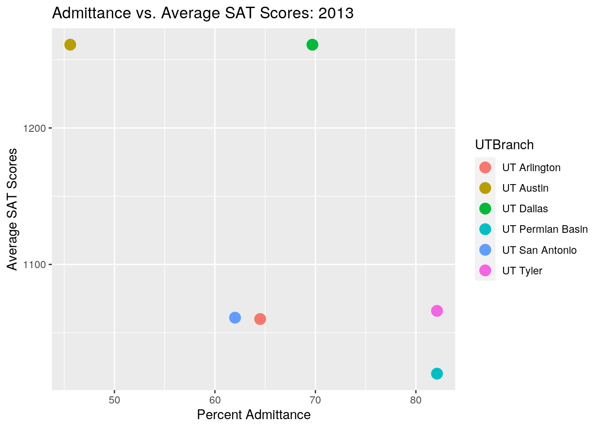
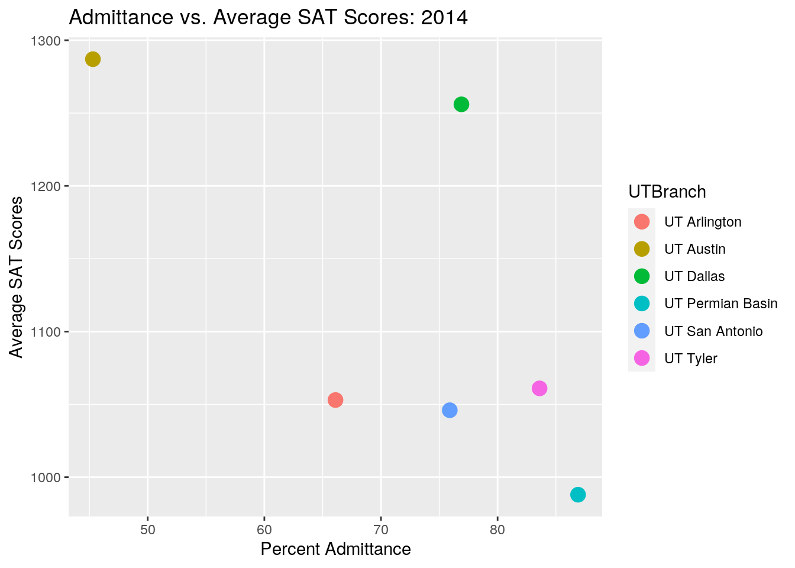
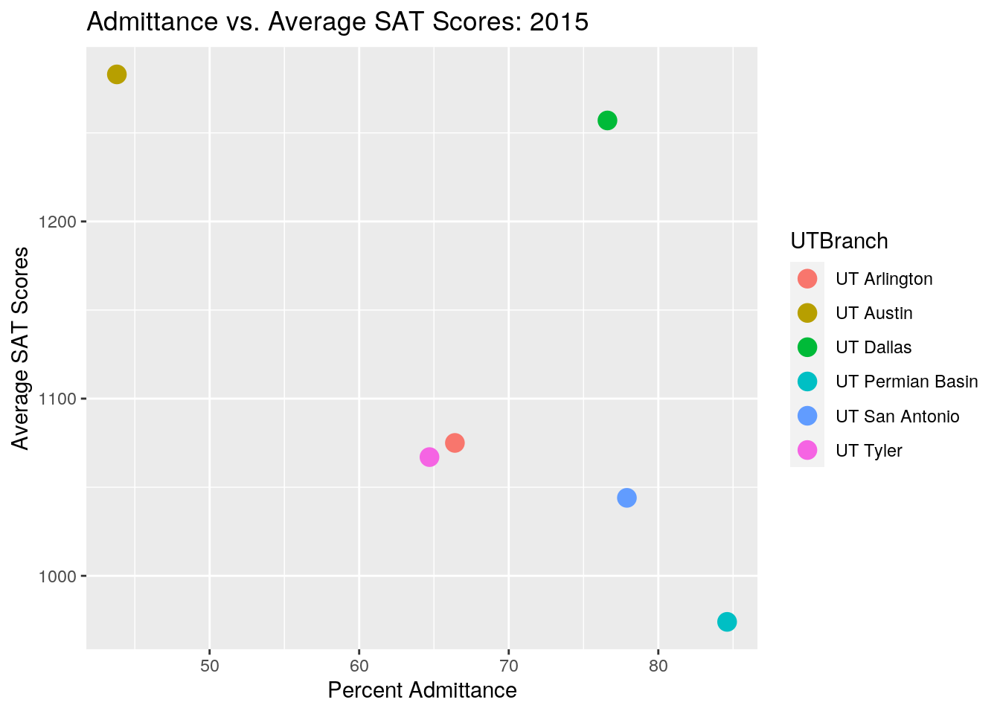
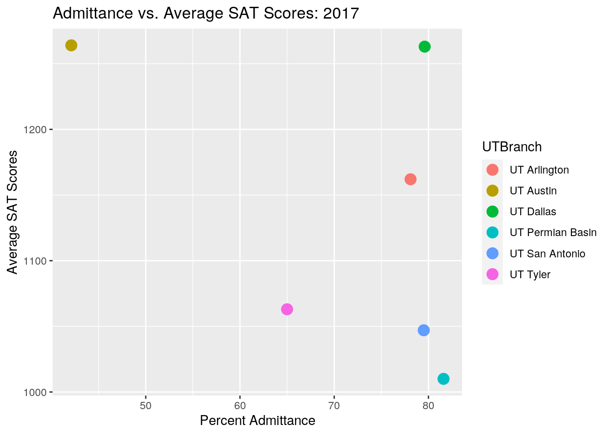
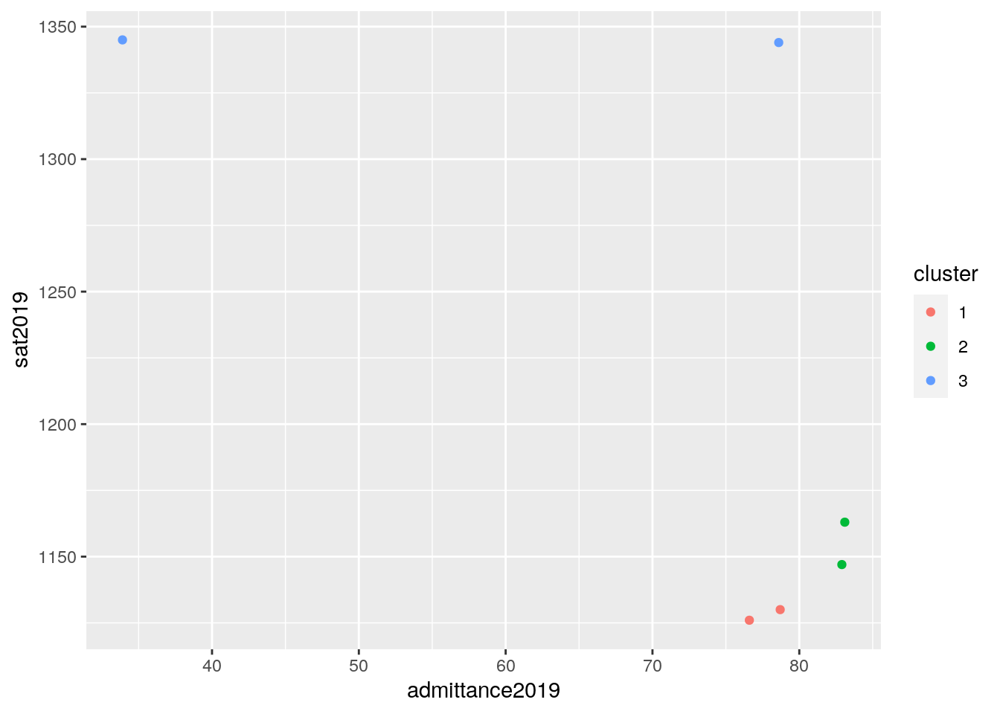

January 1, 0001
Data Wrangling and Data Exploration of UT Admissions Data
In my quest for related data, I settled on a pair of data sets concerning the admissions data for the various colleges in the University of Texas system. The first data set looked at various standardized test scores for the incoming classes of each school for the years 2013-2019. The second data set looked at the admission statistics for the incoming classes of each school for the years 2011-2019, breaking down the numbers for applicants, accepted students, and everything in between. I chose these two data sets to see if I could find a correlation between standardized test score averages per year and how high a school’s average acceptance rate is that year. I expect a higher average score on standardized tests to correlate with a higher acceptance rate. This interested me both as a student who applied to multiple UT System schools and also since my brother applied to many of them as well during the most recent application cycles. I could definitely see differences, some of which were definitely due to the pandemic, and wanted to see what I could find out about the statistics. I’d originally wanted to look at similar data but for law schools since I applied to law school this past cycle but LSAC doesn’t make the raw data available to the public, only the finished statistics.*
In order to prepare the two datasets for joining, some tidying was necessary. For the test scores data set, since there was a lot of data presented, I decided to focus on the variable of average SAT score for each year, so I selected for just that column. I then made the years between 2013 and 2019 the columns instead, by widening, so it would make for a better comparison to the other data and a cleaner format. For the admissions data set, the first problem I had was that the dataset focused on the years 2011-2019 which wouldn’t match the test scores data, so before bringing the data into R, I removed the rows containing data for 2011 and 2012. Since there was a lot of data presented, I decided to focus on the variable of percentage of acceptance and therefore selected for just that column. Again I widened the data to make the columns organized by year to clean up the formatting and make the data more concise.
admissionsdata <- read.csv("admissionsdata.csv")
testscores <- read.csv("testscores.csv")library(dplyr)
library(tidyverse)
admission_all <- admissionsdata[admissionsdata$RACE == "All",
]
admissiondata <- admission_all %>% select(UTBranch = UT_SHORT_NAME,
PCT_Acceptance_Year = YEAR, PCT_Acceptance = PCT_ACCEPTANCE) %>%
filter(UTBranch != "UT Rio Grande Valley")
admissions_data <- admissiondata %>% pivot_wider(names_from = "PCT_Acceptance_Year",
values_from = "PCT_Acceptance") %>% mutate_all(function(x) str_replace_all(x,
"%", "")) %>% mutate_at(2:8, as.numeric)TS <- testscores %>% select(UTBranch = UT_SHORT_NAME, Year, "SAT.Average.Score")
testscore <- TS %>% pivot_wider(names_from = "Year", values_from = "SAT.Average.Score")
glimpse(testscore)## Rows: 10
## Columns: 8
## $ UTBranch <fct> UT Arlington, UT Austin, UT Brownsville, UT Dallas, UT El Pa…
## $ `2013` <int> 1060, 1261, 907, 1261, 922, 961, 1020, NA, 1061, 1066
## $ `2014` <int> 1053, 1287, 925, 1256, 936, 965, 988, NA, 1046, 1061
## $ `2015` <int> 1075, 1283, NA, 1257, 935, NA, 974, 948, 1044, 1067
## $ `2016` <int> 1076, 1269, NA, 1261, 925, NA, 956, 954, 1033, 1055
## $ `2017` <int> 1162, 1264, NA, 1263, 938, NA, 1010, 952, 1047, 1063
## $ `2018` <int> 1160, 1360, NA, 1324, 946, NA, 1108, 1041, 1130, 1179
## $ `2019` <int> 1147, 1345, NA, 1344, 1011, NA, 1130, 1038, 1126, 1163glimpse(TS)## Rows: 58
## Columns: 3
## $ UTBranch <fct> UT Arlington, UT Arlington, UT Arlington, UT Arling…
## $ Year <int> 2013, 2014, 2015, 2016, 2017, 2018, 2019, 2013, 201…
## $ SAT.Average.Score <int> 1060, 1053, 1075, 1076, 1162, 1160, 1147, 1261, 128…I joined the data so that there would be an average SAT score and average acceptance percentage for each campus for every year 2013-2019. I dropped UT Rio Grande Valley and UT El Paso since they had incomplete data. I also renamed all the columns post-join to correctly and clearly reflect the data in them, renaming the admissions data to reflect the year and that the numbers in them were admittance percentages and renaming the test score data to reflect the year and their status as mean SAT scores.
data <- admissions_data %>% left_join(testscore, by = "UTBranch")
dataclean <- data %>% filter(UTBranch == "UT Austin" | UTBranch ==
"UT Dallas" | UTBranch == "UT Permian Basin" | UTBranch ==
"UT San Antonio" | UTBranch == "UT Tyler" | UTBranch == "UT Arlington")
datarenamed <- dataclean %>% rename(admittance2013 = "2013.x",
admittance2014 = "2014.x", admittance2015 = "2015.x", admittance2016 = "2016.x",
admittance2017 = "2017.x", admittance2018 = "2018.x", admittance2019 = "2019.x",
sat2013 = "2013.y", sat2014 = "2014.y", sat2015 = "2015.y",
sat2016 = "2016.y", sat2017 = "2017.y", sat2018 = "2018.y",
sat2019 = "2019.y")I used filter to select the data specifically for UT Austin. I then arranged the data by the branch that they were from. Next, I used select to call up only the data from 2013, but from all branches. I then went on to calculate various summary statistics for the data including means, standard deviations, medians, and inner quantile ranges.
datarenamed %>% filter(str_detect(UTBranch, "Austin"))## # A tibble: 1 x 15
## UTBranch admittance2013 admittance2014 admittance2015 admittance2016
## <chr> <dbl> <dbl> <dbl> <dbl>
## 1 UT Aust… 45.6 45.3 43.8 46.4
## # … with 10 more variables: admittance2017 <dbl>, admittance2018 <dbl>,
## # admittance2019 <dbl>, sat2013 <int>, sat2014 <int>, sat2015 <int>,
## # sat2016 <int>, sat2017 <int>, sat2018 <int>, sat2019 <int>datarenamed %>% arrange(desc(UTBranch))## # A tibble: 6 x 15
## UTBranch admittance2013 admittance2014 admittance2015 admittance2016
## <chr> <dbl> <dbl> <dbl> <dbl>
## 1 UT Tyler 82.1 83.6 64.7 69.3
## 2 UT San … 62 75.9 77.9 76.4
## 3 UT Perm… 82.1 86.9 84.6 81.4
## 4 UT Dall… 69.7 76.9 76.6 75.5
## 5 UT Aust… 45.6 45.3 43.8 46.4
## 6 UT Arli… 64.5 66.1 66.4 69.8
## # … with 10 more variables: admittance2017 <dbl>, admittance2018 <dbl>,
## # admittance2019 <dbl>, sat2013 <int>, sat2014 <int>, sat2015 <int>,
## # sat2016 <int>, sat2017 <int>, sat2018 <int>, sat2019 <int>datarenamed %>% select(UTBranch, "admittance2013", "sat2013")## # A tibble: 6 x 3
## UTBranch admittance2013 sat2013
## <chr> <dbl> <int>
## 1 UT Arlington 64.5 1060
## 2 UT Austin 45.6 1261
## 3 UT Dallas 69.7 1261
## 4 UT Permian Basin 82.1 1020
## 5 UT San Antonio 62 1061
## 6 UT Tyler 82.1 1066datarenamed %>% group_by(UTBranch)## # A tibble: 6 x 15
## # Groups: UTBranch [6]
## UTBranch admittance2013 admittance2014 admittance2015 admittance2016
## <chr> <dbl> <dbl> <dbl> <dbl>
## 1 UT Arli… 64.5 66.1 66.4 69.8
## 2 UT Aust… 45.6 45.3 43.8 46.4
## 3 UT Dall… 69.7 76.9 76.6 75.5
## 4 UT Perm… 82.1 86.9 84.6 81.4
## 5 UT San … 62 75.9 77.9 76.4
## 6 UT Tyler 82.1 83.6 64.7 69.3
## # … with 10 more variables: admittance2017 <dbl>, admittance2018 <dbl>,
## # admittance2019 <dbl>, sat2013 <int>, sat2014 <int>, sat2015 <int>,
## # sat2016 <int>, sat2017 <int>, sat2018 <int>, sat2019 <int>datarenamed %>% summarize(mean("admittance2015", na.rm = T),
n(), n_distinct(UTBranch))## # A tibble: 1 x 3
## `mean("admittance2015", na.rm = T)` `n()` `n_distinct(UTBranch)`
## <dbl> <int> <int>
## 1 NA 6 6datarenamed %>% summarize(sd("sat2017", na.rm = T), n(), n_distinct(UTBranch))## # A tibble: 1 x 3
## `sd("sat2017", na.rm = T)` `n()` `n_distinct(UTBranch)`
## <dbl> <int> <int>
## 1 NA 6 6datarenamed %>% summarize(var("admittance2014", na.rm = T), n(),
n_distinct(UTBranch))## # A tibble: 1 x 3
## `var("admittance2014", na.rm = T)` `n()` `n_distinct(UTBranch)`
## <dbl> <int> <int>
## 1 NA 6 6datarenamed %>% summarize(IQR("admittance2016", na.rm = T), n(),
n_distinct(UTBranch))## # A tibble: 1 x 3
## `IQR("admittance2016", na.rm = T)` `n()` `n_distinct(UTBranch)`
## <dbl> <int> <int>
## 1 NA 6 6datarenamed %>% summarize(median("sat2019", na.rm = T), n(),
n_distinct(UTBranch))## # A tibble: 1 x 3
## `median("sat2019", na.rm = T)` `n()` `n_distinct(UTBranch)`
## <chr> <int> <int>
## 1 sat2019 6 6Next I created a correlation heatmap of my numeric variables.
cors <- datarenamed %>% select_if(is.numeric) %>% cor()
cors[lower.tri(datarenamed)] <- NA
cors %>% as.data.frame %>% rownames_to_column %>% pivot_longer(-1) %>%
na.omit %>% ggplot(aes(rowname, name, fill = value)) + geom_tile() +
geom_text(aes(label = round(value, 2))) + xlab("") + ylab("") +
coord_fixed() + scale_fill_gradient2(low = "red", high = "blue")The next plot I made was to show the relationship between
dataorganize1 <- datarenamed %>% pivot_longer(c("admittance2013",
"admittance2014", "admittance2015", "admittance2016", "admittance2017",
"admittance2018", "admittance2019"), names_to = "admittanceyear",
values_to = "percentadmittance")
dataoragnize2 <- dataorganize1 %>% pivot_longer(c("sat2013",
"sat2014", "sat2015", "sat2016", "sat2017", "sat2018", "sat2019"),
names_to = "year", values_to = "avgsat")Then, I made plots showing the correlation between the admittance percentage and SAT score for each year, 2013-2019, in my data set. The data for the different campuses were separated by color as indicated in the legend. You can see, by comparing the data from each year side by side, that the average admittance increased for some campuses, such as UT Arlington, and decreased for others, such as UT Austin. There are also different coordinations based on campus. For example, as UT Arlington’s admittance increased, their average SAT scores also increased, while for UT Austin, as their admissions decreased, their average SAT scores increased.
ggplot(datarenamed, aes(admittance2013, sat2013)) + geom_point(size = 4,
aes(color = UTBranch)) + ggtitle("Admittance vs. Average SAT Scores: 2013") +
xlab("Percent Admittance") + ylab("Average SAT Scores")
ggplot(datarenamed, aes(admittance2014, sat2014)) + geom_point(size = 4,
aes(color = UTBranch)) + ggtitle("Admittance vs. Average SAT Scores: 2014") +
xlab("Percent Admittance") + ylab("Average SAT Scores")
ggplot(datarenamed, aes(admittance2015, sat2015)) + geom_point(size = 4,
aes(color = UTBranch)) + ggtitle("Admittance vs. Average SAT Scores: 2015") +
xlab("Percent Admittance") + ylab("Average SAT Scores")
ggplot(datarenamed, aes(admittance2016, sat2016)) + geom_point(size = 4,
aes(color = UTBranch)) + ggtitle("Admittance vs. Average SAT Scores: 2016") +
xlab("Percent Admittance") + ylab("Average SAT Scores")ggplot(datarenamed, aes(admittance2017, sat2017)) + geom_point(size = 4,
aes(color = UTBranch)) + ggtitle("Admittance vs. Average SAT Scores: 2017") +
xlab("Percent Admittance") + ylab("Average SAT Scores")
ggplot(datarenamed, aes(admittance2018, sat2018)) + geom_point(size = 4,
aes(color = UTBranch)) + ggtitle("Admittance vs. Average SAT Scores: 2018") +
xlab("Percent Admittance") + ylab("Average SAT Scores")
ggplot(datarenamed, aes(admittance2019, sat2019)) + geom_point(size = 4,
aes(color = UTBranch)) + ggtitle("Admittance vs. Average SAT Scores: 2019") +
xlab("Percent Admittance") + ylab("Average SAT Scores")This can be interpreted as UT Austin’s admittance policies becoming more tight. As the years go on, the applicant pool consists of higher SAT scores, but they are forced to become more choosy, possibly due to higher volumes of applications and a static amount of seats available to the incoming class every year, so their admittance percentage decreases since they are still able to only admit x amount of students from a growing pool of y applicants. In the case of UT Arlington, as a school in UT’s CAP system, when applicants to UT Austin are deferred into the Coordinated Admission Program, or CAP program, many choose to attend UT Arlington. The CAP program is UT’s deferment system, where incoming freshmen are rejected from UT Austin but are provided with the option to accept a spot at one of the other UT campuses in UT’s CAP system for one year before then getting a fast-track to transfer to UT Austin in their sophomore year. This means that the direct product of UT Austin’s acceptance percentage going down, the acceptance percentages at CAP system branches increase. The six branches currently a part of the CAP program are UT Arlington, El Paso, Permian Basin, Rio Grande Valley, San Antonio, and Tyler. Of those, four are apart of this study. Looking at their data, you can observe a strong increase in admittance at UT Arlington, and a fluctuating increase at UT San Antonio. UT Permian Basin and Tyler, however, show a decrease in admittance. In addition to this, UT Permian Basin also showed a decrease in average SAT score from 2014 to 2016, before increasing overall with the other schools. The general increase of admittance and average SAT scores at the CAP system branches of UT align well with UT Austin’s increased average SAT scores and decreased admittance, as more high-achieving students are “CAP-ed” and have to seek admittance at these other branches.
I then performed k-means clustering on the data from 2013, 2014, and 2019 respectively.
clust_dat2013 <- datarenamed %>% select("admittance2013", "sat2013")
kmeans2013 <- clust_dat2013 %>% kmeans(3)
kmeans2013## K-means clustering with 3 clusters of sizes 1, 1, 4
##
## Cluster means:
## admittance2013 sat2013
## 1 45.600 1261.00
## 2 69.700 1261.00
## 3 72.675 1051.75
##
## Clustering vector:
## [1] 3 1 2 3 3 3
##
## Within cluster sum of squares by cluster:
## [1] 0.000 0.000 1723.197
## (between_SS / total_SS = 97.2 %)
##
## Available components:
##
## [1] "cluster" "centers" "totss" "withinss" "tot.withinss"
## [6] "betweenss" "size" "iter" "ifault"kmeans2013clust <- clust_dat2013 %>% mutate(cluster = as.factor(kmeans2013$cluster))
kmeans2013clust %>% ggplot(aes(admittance2013, sat2013, color = cluster)) +
geom_point()For the 2013 data, there were three clusters of size two. There was a 95.4% compactness of the clustering, meaning that there was high similarity between the members in that same group. The cluster means for admittance percentages were 72, 66, and 164, while the cluster means for the average SAT scores were 1060.5, 1261, and 1043. This showed a high similarity between the average SAT scores that year, especially when compared to the admittance percentages, whose means were more scattered and dissimilar.
clust_dat2014 <- datarenamed %>% select("admittance2014", "sat2014")
kmeans2014 <- clust_dat2014 %>% kmeans(3)
kmeans2014## K-means clustering with 3 clusters of sizes 1, 3, 2
##
## Cluster means:
## admittance2014 sat2014
## 1 86.9 988.000
## 2 75.2 1053.333
## 3 61.1 1271.500
##
## Clustering vector:
## [1] 2 3 3 1 2 2
##
## Within cluster sum of squares by cluster:
## [1] 0.0000 266.5267 979.7800
## (between_SS / total_SS = 98.4 %)
##
## Available components:
##
## [1] "cluster" "centers" "totss" "withinss" "tot.withinss"
## [6] "betweenss" "size" "iter" "ifault"kmeans2014clust <- clust_dat2014 %>% mutate(cluster = as.factor(kmeans2014$cluster))
kmeans2014clust %>% ggplot(aes(admittance2014, sat2014, color = cluster)) +
geom_point()For the 2014 data, there were three clusters of sizes 1, 1, and 4. There was a 89.1% compactness of the clustering, meaning that there was high similarity between the members in that same group, but less than in 2013. The cluster means for admittance percentages were 31, 133, and 145, while the cluster means for the average SAT scores were 1287, 1256, and 1037. This again showed a high similarity between the average SAT scores that year, especially when compared to the admittance percentages, whose means were more scattered and dissimilar. This repeated disparity could be explained by the unique looking data coming from UT Austin, which, as mentioned earlier, as an effect of being the main campus of the university has a significantly lower acceptance percentage due to the much greater volume of applicants it receives every year. So, while it has a similar average SAT score of applicants, albeit slightly higher, it’s acceptance percentage is much lower than the other campuses, skewing the cluster means.
clust_dat2019 <- datarenamed %>% select(admittance2019, sat2019)
kmeans2019 <- clust_dat2019 %>% kmeans(3)
kmeans2019## K-means clustering with 3 clusters of sizes 2, 2, 2
##
## Cluster means:
## admittance2019 sat2019
## 1 77.65 1128.0
## 2 83.00 1155.0
## 3 56.25 1344.5
##
## Clustering vector:
## [1] 2 3 3 1 1 2
##
## Within cluster sum of squares by cluster:
## [1] 10.205 128.020 999.545
## (between_SS / total_SS = 98.0 %)
##
## Available components:
##
## [1] "cluster" "centers" "totss" "withinss" "tot.withinss"
## [6] "betweenss" "size" "iter" "ifault"kmeans2019clust <- clust_dat2019 %>% mutate(cluster = as.factor(kmeans2019$cluster))
kmeans2019clust %>% ggplot(aes(admittance2019, sat2019, color = cluster)) +
geom_point() For the 2019 data, there were once again three clusters of size two. There was an 88% compactness of the clustering, meaning that there was high similarity between the members in that same group, but once again lower than in 2013, showing a decreasing trend in compactness over the years observed in this dataset. The cluster means for admittance percentages were 77.5, 171.5, and 137, while the cluster means for the average SAT scores were 1344.5, 1155, and 1128. Once again there is a high similarity between the average scores that year, especially when compared to the admittance percentages, whose means were more scattered and dissimilar. Comparing these means with those in 2013, you can see a mean increase in the average SAT score of applicants while the admittance percentages stay about the same. However, comparing 2019’s data with that from 2014 sees an increase in admittance percentage cluster means, possibly due to the differences in cluster size used in that k-means clustering.